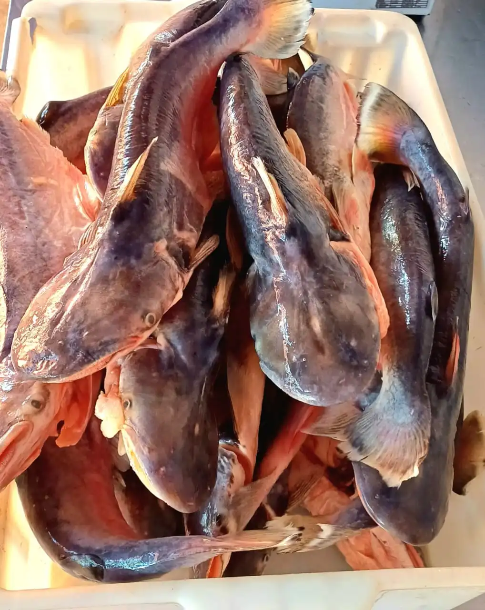
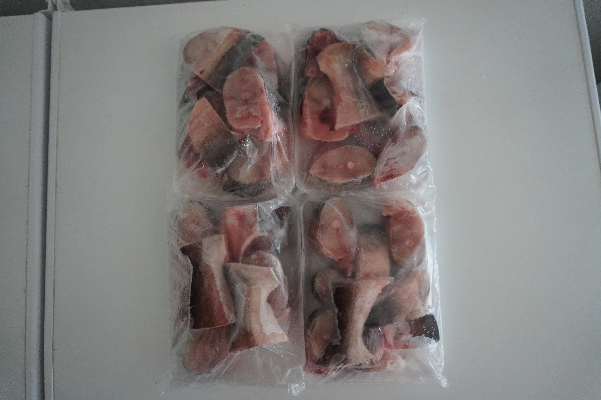

Peixe Palmito
Mandi-Palmito — Peixe de Couro do Paraguai
Escolha o Corte:
Retire na loja: R. Bom Jardim, 379 — Centro, Cáceres.
Peixe Palmito: A Joia Discreta das Águas do Rio Paraguai
O Peixe Palmito, conhecido pelos pescadores pantaneiros como Mandi-Palmito, é um dos tesouros mais subestimados das águas do Rio Paraguai. Pertencente à família dos bagres — peixes de couro sem escamas —, ele habita preferencialmente as margens lodosas e os trechos de correnteza fraca do rio, onde encontra alimento abundante. Diferente dos peixes de escama mais famosos da região, o Palmito ainda não ganhou o reconhecimento nacional que merece, o que o torna uma descoberta especial para quem visita as peixarias de Cáceres-MT pela primeira vez. Sua carne de coloração amarelo-clara apresenta um sabor rico, levemente adocicado e marcante que os pescadores locais descrevem como "o sabor do rio puro".
A Vantagem do Peixe de Couro: Sem Escamas, Quase Sem Espinhas
Como todo peixe de couro, o Peixe Palmito não possui escamas — o que elimina completamente a tarefa de escamar antes do preparo. Mas sua grande vantagem sobre outros bagres é a quase total ausência de espinhas intermusculares: a estrutura óssea é simples, com apenas a espinha central e as costelas, tornando o consumo muito mais tranquilo e seguro, especialmente para crianças, idosos e para quem não está acostumado a lidar com peixe. A carne, de textura firme mas macia após o cozimento, desfaz-se em lascas generosas que absorvem qualquer tempero com facilidade.
Receitas e Formas de Preparo
Na culinária ribeirinha das margens do Rio Paraguai, o Peixe Palmito é preparado principalmente destas formas:
- Ensopado Pantaneiro: Postas cozidas lentamente em refogado de tomate, cebola, pimentão, coentro e pimenta-de-cheiro. O caldo fica dourado e encorpado, servido com arroz branco e banana da terra frita — prato reconfortante de domingo.
- Frito Inteiro com Sal e Limão: O Palmito inteiro, temperado apenas com sal grosso e limão, frito em óleo bem quente até dourar por completo. A pele crocante envolve uma carne suculenta e aromática.
- Grelhado na Brasa: Postas grossas ou o peixe inteiro sobre brasas vivas, com tempero de alho, urucum e sal. O sabor levemente defumado complementa a doçura natural da carne.
- Caldeirada com Legumes: Postas cozidas com batata, cenoura e abobrinha em caldo temperado com ervas e pimenta-de-cheiro — refeição completa e nutritiva para qualquer dia da semana.
Frescor e Procedência Garantidos
Na Peixaria Rio Paraguai, o Peixe Palmito é capturado de forma artesanal por pescadores parceiros nas águas do Rio Paraguai e chega à loja fresco no mesmo dia. Trabalhamos exclusivamente com pesca regulamentada, respeitando a piracema e os tamanhos mínimos de captura definidos pela legislação ambiental de Mato Grosso. Disponível inteiro e limpo ou em postas, sujeito à disponibilidade do dia — consulte pelo WhatsApp antes de vir à loja em Cáceres.